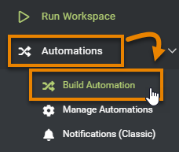
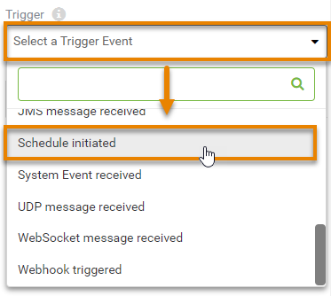
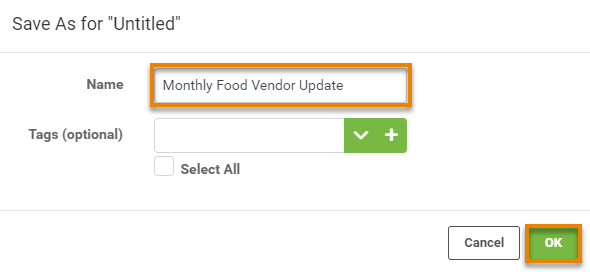
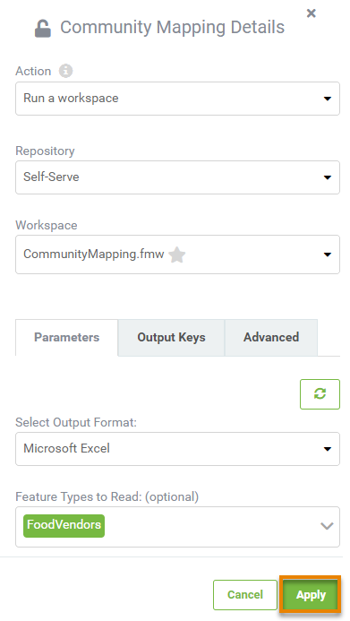
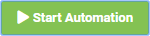

After completing this unit, you’ll be able to:
Fatima tells Frank that she would like to receive an email with an Excel report of all the food vendors once a month. Frank offers to use FME Server Automations to create that workflow for her.
Automations takes data integration to the next level. Designing your FME workspaces with this in mind lets you create reusable, modular, and integrated applications for your organization, rather than one-off, single-use workspaces for every workflow. Automations support automated schedules and event-driven workflows that can:
Automations let you implement the enterprise integration patterns popularized by Gregor Hohpe and Bobby Woolf: repeatable solutions to commonly occurring problems encountered when integrating applications or systems.
Frank needs to create a new Automation to run his self-serve workspace once a month and send the results as an Excel file to Fatima.
He logs into FME Server and clicks Automations > Build Automation in the web interface menu on the left side of the window.

Because he has built Automations before, he clicks Close when the Get Started window appears.
Frank knows all Automations are composed of three objects:
A green Trigger is already on the canvas. He double-clicks the Trigger to open the Trigger Details pane.

He clicks the Trigger drop-down and scrolls down to select Schedule Initiated.

Frank notes that FME Server Schedules are representative of the time zone where FME Server was installed. He sets up a Schedule with the Start date as the last day of the current month and Recurrence as Last day of every month. 
He clicks Apply and the Trigger changes to a Schedule to show it’s been set.

Then he clicks Menu > Save As.

He names the Automation “Monthly Food Vendor Update” and clicks OK.

Now that he’s set a Trigger, he needs to add an Action that will occur when the trigger is activated.
He clicks on the empty circle icon above Next Action to open the Next Action Details pane. Then he selects Run a Workspace from the drop-down options.


He will set the Automation to run the self-serve workspace. He clicks Repository and chooses Self-Serve, then for Workspace chooses CommunityMapping.fmw.
Next, he fills in the Parameters, choosing "Excel" for the Output Format and selecting "FoodVendors" from Feature Types to Read. With the Parameters filled in, he clicks Apply.

After clicking Apply, two new options appear on the canvas: a Next Action option for each port of the CommunityMapping.fmw workspace. The ✔ (check) port action will occur if the workspace runs successfully, and the X port action will occur if the workspace fails. These branching options let you create robust Automations that account for failure.

Frank clicks the Next Action option coming out of the success port at the top and chooses Send an email for the Action. He fills in the email account information for his own company Gmail address, using the Gmail template provided via Load Template.
For the Email To parameter, he types in Fatima’s email address, and for Email From, he enters his. For Subject, she enters “Monthly Food Vendor Report”. For Email Body he enters:
“Hello Fatima,
Please find the most up-to-date Food Vendor data attached.
Best, Frank”
Finally, he needs to attach the data created by the workspace. For Attachment he enters the same path used for Output Location when the workspace runs, “$(FME_SHAREDRESOURCE_DATA)/CommunityMapping.zip”.
To test the email server connection, he clicks Validate. After a moment, an alert reporting the connection is Valid appears at the top of the pane. Seeing that it works, he clicks Apply.
His Automation is complete! He clicks the icon in the toolbar to save his Automation.
Then he clicks Start Automation in the top-right corner of the window.

The Automation starts. To test it (as it won’t run for a while), he clicks the clock icon on the Schedule trigger to open its parameters. There is a new button: Trigger. This button is available once an Automation is running and lets you test it by immediately running it once. He clicks Trigger to run the Automation once right now.

Fatima tells Frank she received an email: it worked. One less manual task for Fatima to do thanks to FME!
Create an Automation like Frank’s.
If you wish, you can use your own email account for the Email External Action, using one of the provided templates if appropriate. Instead of sending the report to Marcie, send an email to an account you monitor.
If you don't want to use email, you can simply use the Log a message Action instead. Use Menu > View Log File from the page with your running Automation to test if it's working.